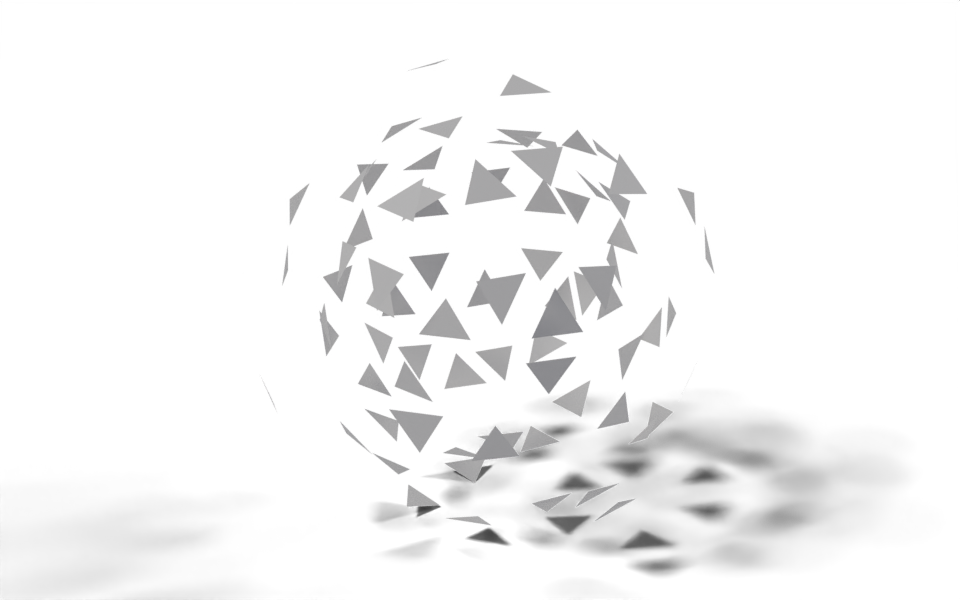

from nodebpy import geometry as g
with g.tree("Explosion", is_modifier=True) as tree:
geometry = tree.inputs.geometry("Geometry")
speed = tree.inputs.float("Speed", 4.0, min_value=0.0)
gravity = tree.inputs.float("Gravity", 9.81)
seed = tree.inputs.integer("Seed")
with g.Frame("Fragments"):
# split every face off and give it its own launch velocity
launch = g.Normal() * speed * g.RandomValue.float(0.4, 1.6, seed=seed)
fragments = (
geometry
>> g.SplitEdges()
>> g.ScaleElements.face(scale=0.9)
>> g.StoreNamedAttribute.face.vector(name="velocity", value=launch)
)
with g.Frame("Ballistics"):
sim = g.SimulationZone()
pieces = sim.items.geometry(fragments, "Pieces")
velocity = g.NamedAttribute.vector("velocity")
dt = sim.delta_time
# Set Position reads `velocity` after it has been stored,
# so the offset already includes this step's gravity
(
pieces.current
>> g.StoreNamedAttribute.point.vector(
name="velocity", value=velocity - g.CombineXYZ(z=gravity * dt)
)
>> g.SetPosition(offset=velocity * dt)
>> pieces.next
)
pieces.result >> tree.outputs.geometry("Geometry")Explosion
geonodes
simulation
Break a mesh into its faces and throw them outwards under gravity with a simulation zone.

Every face of the mesh is split off as its own fragment and given a launch velocity along its normal. A simulation zone then moves the fragments a little each frame and pulls them down with gravity. Play the timeline from the first frame to see it.
How it works
Fragments. Split Edges disconnects every face, and Scale Elements shrinks each one slightly so the cracks between them show. The launch velocity is stored as a velocity attribute on the face domain, so each fragment gets a single speed: g.RandomValue.float(...) is evaluated once per face there. Because the faces no longer share points, reading the attribute on the point domain later gives every point its own face’s value.
Simulation. g.SimulationZone() adds the input and output nodes of the zone. sim.items.geometry(fragments, "Pieces") declares the state that is carried from one frame to the next and links its starting value; the returned item has .current to read inside the zone, .next to write back, and .result to read after it. sim.delta_time is the time since the previous frame.
Each step stores a new velocity, then offsets the points by it. Fields are evaluated by the node that uses them, so velocity in Set Position reads the attribute after Store Named Attribute has written it, and the offset already includes this step’s gravity. That is the usual semi-implicit Euler update, and it falls out of the order of the two nodes rather than needing a second variable.
Node tree
Original
Inspired by demos/explosion.py in geonodes (write-up), a much larger demo that fractures a mesh into solid parts with booleans, passes forces into the simulation as closures and spins the parts as they fly. This page keeps the core of it: split, launch, integrate.